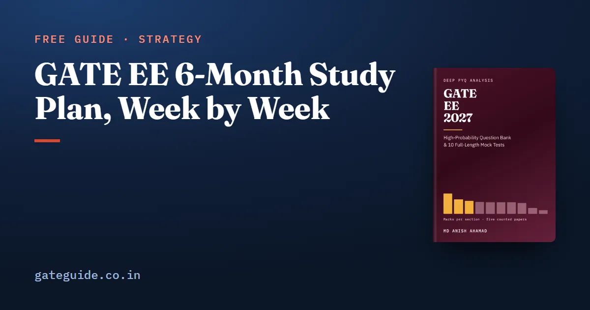

GATE EE 6-Month Study Plan, Week by Week

A six-month GATE EE study plan has about 26 weeks, enough for a full first learning of every section in a sensible order. Engineering Mathematics and General Aptitude run from the first week to the last, a single week goes to the topics no paper has asked, and the final five weeks belong to past papers and mocks. This guide lays the 26 weeks out and explains why each block sits where it does.
In this guide
Key takeaways
- 26 weeks fit a full first pass of all ten sections plus a final five weeks of papers and mocks.
- The section order follows dependencies: circuits early, Signals before Control, Machines before Power Systems.
- Engineering Mathematics gets 30 to 40 minutes every day; General Aptitude gets an hour every week.
- One week in the middle goes to the thirteen named topic groups never asked from 2022 to 2026.
- The 2022 paper is sat early as a map; 2025 and 2026 are held back for full timed practice.
- The week counts are a plan, not a count; adjust them to your weak sections.
How a six-month plan differs from a shorter one
A first learning means meeting a topic properly, working its standard problems, and being able to solve an unfamiliar version. A second pass means returning to topics you already know to sharpen speed and close gaps.
Shorter plans of two or three months assume you have already had a first learning. A six-month plan does not. That is its main advantage, and it is why each section here gets two or three weeks rather than a few days.
The section order and the reason for it
The order follows the staged plan in the GATE EE 2027 book. It respects counted marks from the 2022 to 2026 papers, but bends where one section feeds another.
- Electric circuits first. Machines, power systems, converters and instruments are all analysed as circuits.
- Signals and Systems, then Control. Transfer functions and frequency response are learned once and reused.
- Machines, then Power Systems. The machine and transformer models are the parts of every power-system model.
- Power Electronics and Analog Electronics after the circuits base is solid.
- Electromagnetic Fields and Measurements last, since their means are 4.4 and 2.6 marks, but never skipped.
Remember: Mathematics is not a block in this plan. It is the heaviest section in every counted paper, so it runs daily beside everything else.
The 26 weeks
| Weeks | Main section | Alongside |
|---|---|---|
| 1-3 | Electric circuits | Sit the 2022 paper timed in week 2 |
| 4-5 | Signals and Systems | 2023 and 2024 questions on circuits |
| 6-7 | Control Systems | Signals and Control together |
| 8-10 | Electrical Machines | Induction machine to depth |
| 11-13 | Power Systems | Per-unit learned here, not later |
| 14 | The never-asked topic groups | All thirteen, one short reading each |
| 15-17 | Power Electronics | Numerical answers, worked to a number |
| 18-19 | Analog and Digital Electronics | Op-amps to depth |
| 20 | Electromagnetic Fields and Measurements | Short, broad reading |
| 21 | Buffer and consolidation | Re-attempt the error log |
| 22-26 | Past papers and mocks | 2025 and 2026 timed, then mocks |
Every week also carries the daily mathematics slot and the weekly aptitude hour.
A worked example of the weekly budget
Suppose you can give 20 hours a week. Over 26 weeks that is hours. Now take the daily mathematics slot at 35 minutes:
One aptitude hour a week adds hours, or 5 per cent of the total. So about a quarter of your time goes to the two blocks that, between them, offered about 30 marks in every counted paper. That is a fair trade.
Trap: Do not save mathematics for the last two months. A skill learned in week one and practised daily is fast in February; one crammed in December is not.
The shape of a single week
Inside each block, use the same rhythm.
- Four days of new topics, one topic a day, taken in order of counted weight within the section.
- One day of practice questions on those four topics, loosely timed.
- One day for an hour of General Aptitude and a cold re-attempt of last week's wrong answers.
- One day for a timed mixed set across learned sections, or rest.
Keep an error log from week one. Every wrong answer gets a cause: misread, wrong method, arithmetic slip, or not known. Only the last needs more study.
Week 14: the topics no paper has asked
Thirteen topic groups named in the 2027 syllabus drew no counted question from 2022 to 2026. They include magnetic circuits, RMS and average values, compensation, insulators, digital meters, oscilloscopes, oscillators, active filters, timers and Schmitt triggers. No amount of past-paper practice will bring you to them.
Most are short, so one week is enough for a first careful reading and a handful of problems each. Per-unit quantities are the exception: learn them with Power Systems in weeks 11 to 13, because fault analysis and load flow are done in per unit.
In one line: A six-month plan buys you a full first learning; protect it by keeping mathematics daily and never letting a section slide to "later".
Weeks 22 to 26: papers and mocks
- Sit the 2025 and 2026 papers as full three-hour tests.
- Then sit mocks, spaced so each is followed by an evening of analysis.
- Score every paper section by section, not as a total.
- Never leave a NAT blank; between 13 and 28 NATs appeared in every counted paper, and none carries a penalty.
- In the last fortnight, stop new learning except a revisit of the never-asked topics.
- In the last week, revise your formula sheet and error log, and sit one paper to hold the three-hour rhythm.
Fitting the plan to your date
GATE 2027 runs from 6 to 21 February 2027. Count 26 weeks back from your paper's date in the GATE 2027 exam dates guide, and slide the plan to fit. If you start late, shorten the first-learning blocks, not the final five weeks.
Use the General Aptitude guide for the weekly hour, practise numbers on the GATE virtual calculator, and read the marking scheme common to every GATE paper before your first mock. The GATE EE 2027 book supplies the topic tables each week's order is drawn from, chapter question banks, and ten full mocks for the final weeks.
Quick revision
- Six months is about 26 weeks: a full first learning plus five weeks of papers and mocks.
- Order: circuits, Signals, Control, Machines, Power Systems, Power Electronics, Electronics, then Fields and Measurements.
- Mathematics daily; aptitude weekly, from week one.
- Week 14 for the thirteen never-asked groups; per-unit belongs with Power Systems.
- 2022 paper early; 2025 and 2026 held for the end.
- Keep an error log with four causes from day one.
- If you start late, cut first-learning weeks, never the final five.
Frequently asked questions
Is 6 months enough to prepare for GATE EE?
For most candidates with an EE degree background, six months gives room for a full first learning of every section, one dedicated week for the never-asked topics, and a final month of past papers and mocks. It cannot guarantee a score, and it works only if you keep a steady weekly rhythm rather than studying in bursts.
In what order should I study GATE EE subjects in 6 months?
A dependency-aware order works well. Electric circuits first, then Signals and Systems, Control Systems, Electrical Machines, Power Systems, Power Electronics, Analog and Digital Electronics, Electromagnetic Fields and Measurements. Engineering Mathematics runs daily from week one, and General Aptitude gets an hour every week.
How many hours a week should I study for a 6-month GATE EE plan?
The counted record cannot answer this, and there is no single right figure. Around twenty steady hours a week fits many students alongside college. What matters more is consistency, a daily mathematics slot, a weekly aptitude hour and a weekly review of wrong answers. Pick a figure you can sustain for 26 weeks.
When should I solve GATE EE previous year papers in a 6-month plan?
Sit the 2022 paper timed in the second week as a map of the exam. Work the 2023 and 2024 papers section by section as you finish each subject. Hold the 2025 and 2026 papers back for the final month and sit them as full timed tests, like mocks.
Sources
Dates, fees and the syllabus are set by the GATE 2027 organising institute and can change. Always confirm at gate2027.iitm.ac.in.